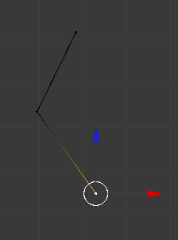
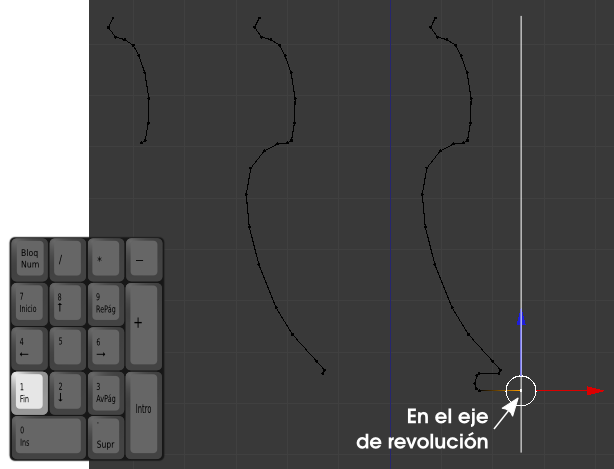
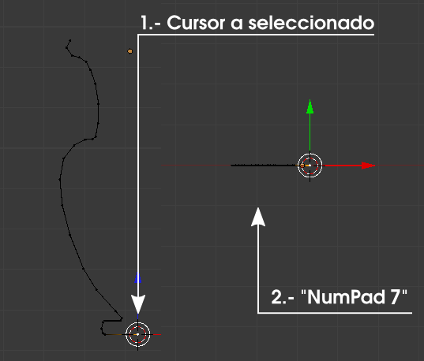

El perfil
Vamos, por lo tanto, a crear un objeto de revolución a partir de un perfil. Comenzamos por añadir un plano a la escena (Añadir/Malla/Plano) y rotarlo 90º en X ("RX90") para verlo frontalmente cuando nos situemos en el punto de vista "NumPad 1". Acto seguido pasamos a Modo Edición  para eliminar ("Supr") uno de los vértices.
para eliminar ("Supr") uno de los vértices.
Lo que nos ha quedado es una línea poligonal abierta. Nos mantendremos en todo momento en el punto de vista "NumPad 1" porque así podremos desplazar los vértices accionando la edición mover ("G") a través de teclado aunque si lo preferimos podemos usar el Manipulador 3D. En cualquiera de los casos desplazamos los tres vértices para que se coloquen en el comienzo del perfil (tenemos en mente una ánfora sin asas).
¿Cómo continuamos definiendo el perfil? Pues con la herramienta más valiosa con la que contamos: la extrusión ("E"). El último de los vértices está seleccionado así que, usando el atajo "E", vamos añadiendo más vértices y dibujamos el perfil de la ánfora. Cuidaremos especialmente el detalle de que el último de los vértices de abajo se sitúe en el lugar donde tengamos pensado que esté el eje de revolución.
Ahora es el momento de definir el eje de revolución. En Blender sólo disponemos del Cursor 3D para ello, así que hay que echarle imaginación. ¿Cómo resolvemos el problema? En vez de definir el eje con dos puntos lo vamos a definir con un punto y una dirección:
- El punto. Está claro al hilo de lo que ya hemos hecho. El Cursor 3D será el que se encargue de determinar el punto por el que pasará el eje. Así que seleccionamos
 el vértice final y colocamos ahí el Cursor 3D con Malla/Adherencia/Cursor a seleccionado.
el vértice final y colocamos ahí el Cursor 3D con Malla/Adherencia/Cursor a seleccionado.
- La dirección. Será la perpendicular al plano del monitor del ordenador; es decir que nos tenemos que colocar en el punto de vista "NumPad 7"
